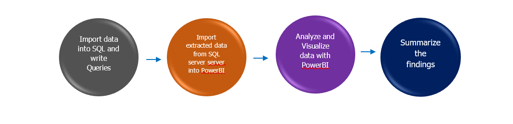
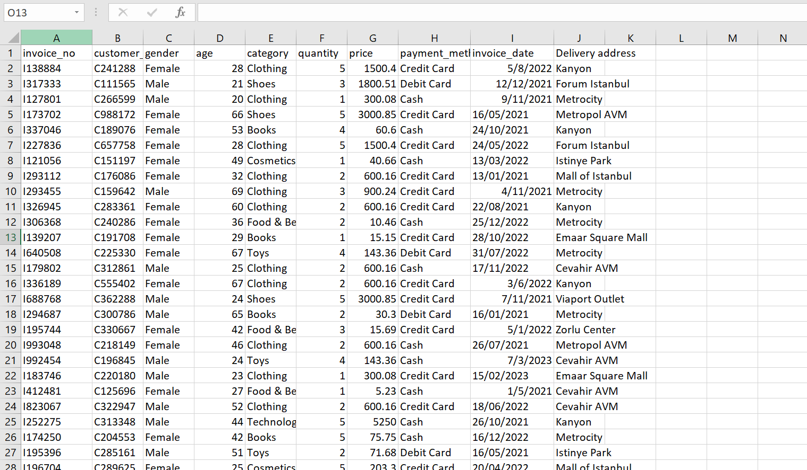
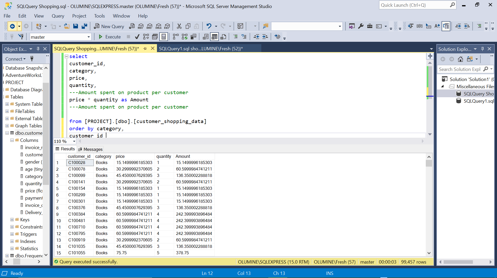
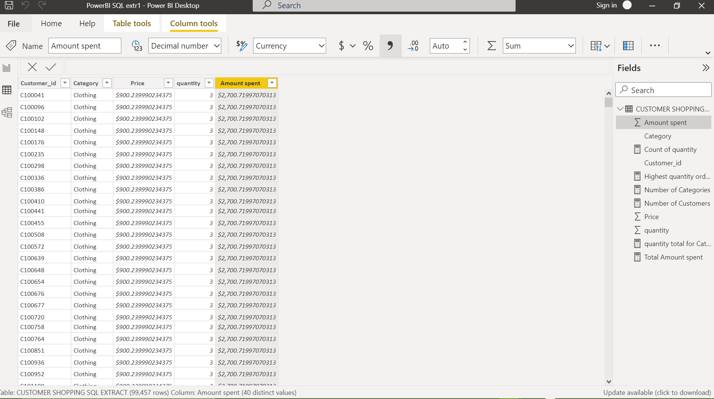
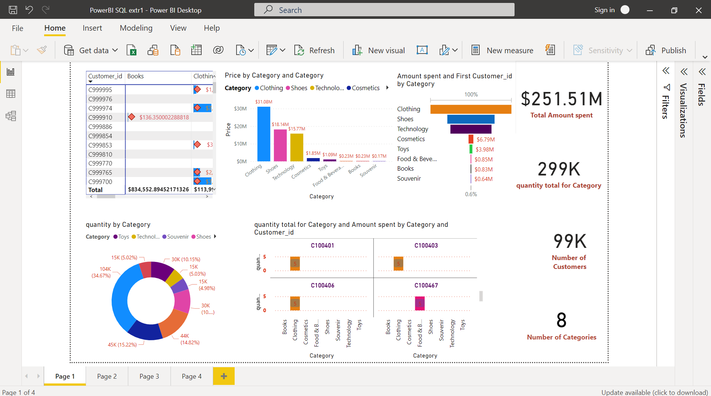
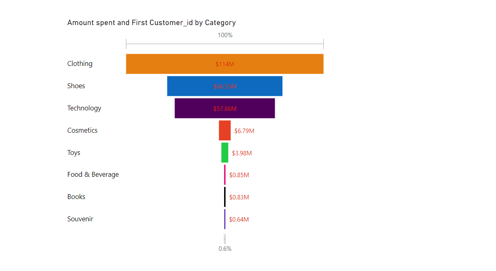
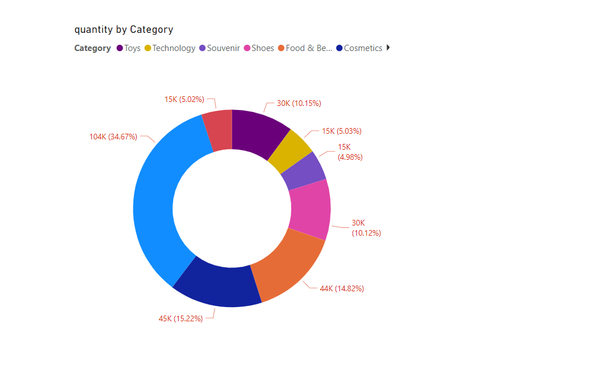
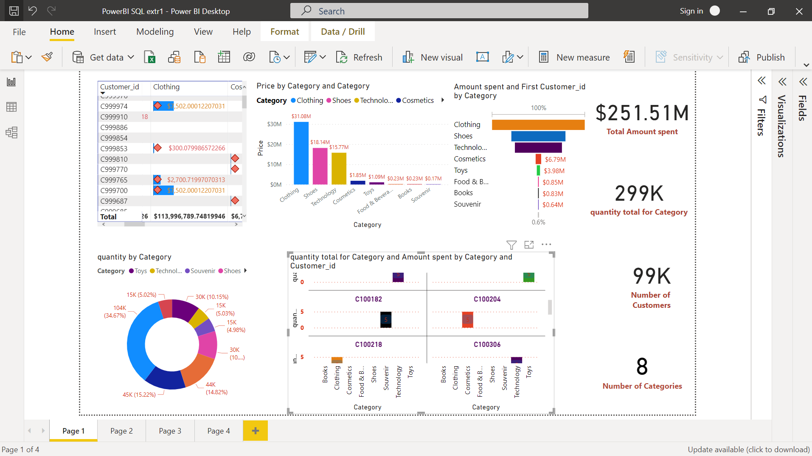

Product Analysis using SQL, PowerBI
Data Source: Kaggle(Customer Loyality dataset)
Softwares: SQL, PowerBI
Outline
1. Understanding the objective
2. Analysis Theme
3. Data Analysis project pipeline
1. Understanding the Objective
A thorough analysis can reveal what's working and what isn't, help inform decisions that drive revenue and reduce waste. The objective is to create a high level dashboard that helps spot KPIs, volume of purchases and their values.Importance
- To ensure that the product is market ready.
- Gives you an idea of customer's perception on a particular product.'
- Can help further improve prduct development.
- Detrmine Actual performance by products, customers
- Which product category has the lowest patronage?
2. Analysis Theme
3. Data Analysis project pipeline
Importing the dataset
The cleaned dataset was imported into SQL to extract and manipulate the data and stored on the SQL server.  Exporting extracted data from SQL server into the PowerBI for analysis and Visualization
The data has been well analyzed for visualization. Data Visualization
Actual Performance by Products
Clothing got the highest number of purchase in the product category as seen from the Amount spent my customers by category. Souvenir had the least number of purchase. It also accounts for about 34.67% of the total quantity sold. 
Actual performance by persons 
From the figure above, the bars with the dark yellow color represents customers (C100004, C100110)with the highest purchase of clothing ($7,502) and their highest quantity ordered. Those with the color magenta shows the customers with the highest purchase of Food and Beverages as well as the total quantity; Note that as we scroll up the visual, we will find other customer names that fall in those category as well since the total number of customers is 99000.